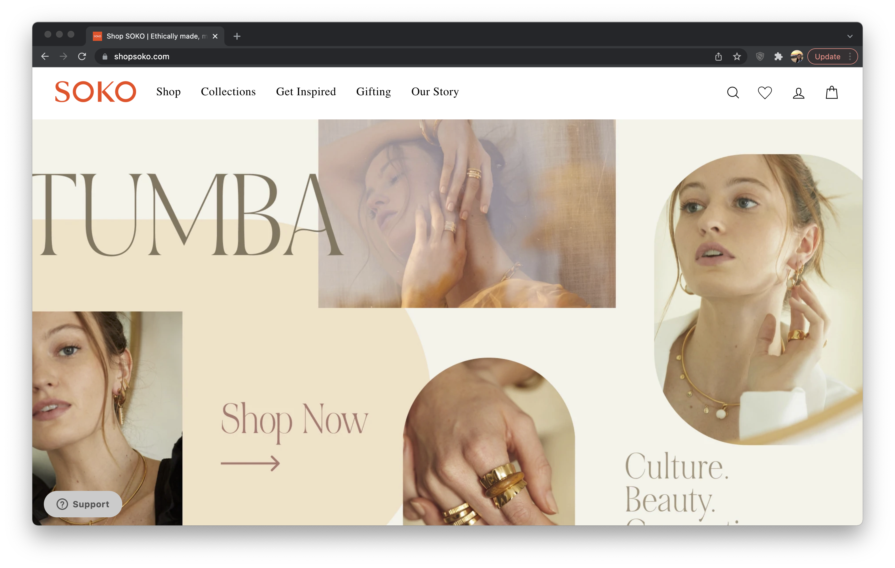
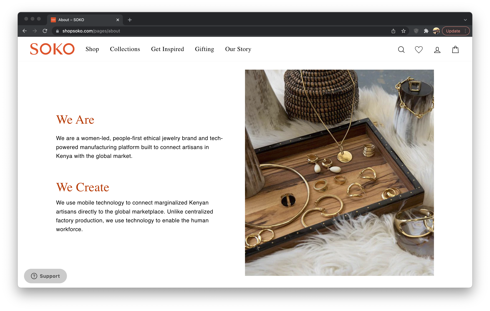
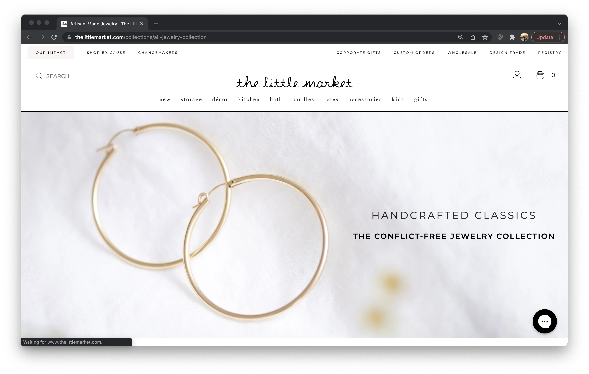
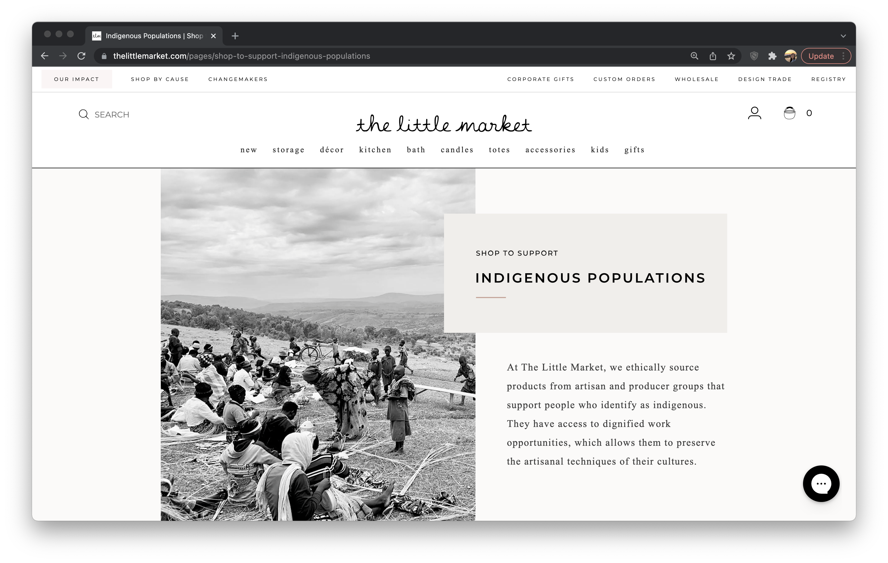
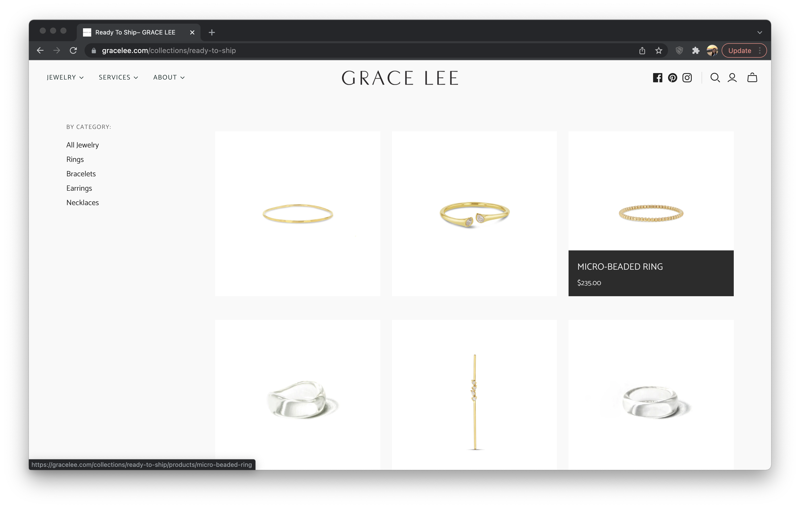
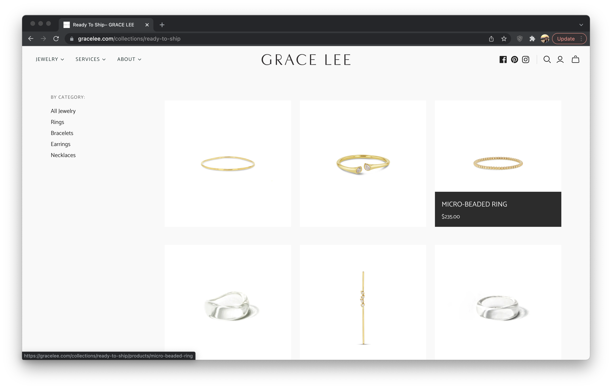

Final project proposal
Introduction
Golden Hour
Golden Hour features gold jewelry that is timeless and promotes ethically mined metals. With a focus on sustainability and eco-friendly practices, Golden Hour has a humble location in San Luis Obispo, CA that gives back to their community with every purchase.
Target audience
This website serves as an only shopping location for those that want to purchase goods with comfort and convenience. This applies to locals and to others that are not from the area that are interested in buying ethically sourced jewelry.
Golden Hour spreads their knowledge of why someone should purchase ethically mined metals over nonethically mined metals. They want to teach others more about what their business stands for and how their actions can contribute to the wellbeing of people and the earth.
Comparative analysis
Soko
The Little Market
Grace Lee
 

Website content
Home
Crafted in house, Golden Hour offers a wide array of gold filled jewelry that is sustainably and ethically sourced.
[A person wearing a bestselling necklace.]
Shop
Browse our selection of thoughtfully created pieces that will complete any look for everyday wearing to special occasion statements.
[New arrival jewelry.]
Jewelry
[Each listing will include a photo.]
Necklaces
-
Sun Necklace
$300
-
Star Necklace
$300
-
Constellation Necklace
$400
Bracelets
-
Pebble Bracelet
$150
-
Stone Bracelet
$150
-
Rock Bracelet
$200
Rings
-
Rose Ring
$100
-
Lilac Ring
$100
Anklets
-
Heart Anklet
$150
About
Giving back to the earth and to the people living on it is our passion. Just like taking care of jewelry is important, we believe that taking care of each other is even more so.
[Employees participating in community activity.]
Visit
Hours: Monday-Saturday 10AM-5PM
347 Peach St
San Luis Obispo, California 93405
Phone: (805) 555 - 8888
[Storefront in San Luis Obispo.]